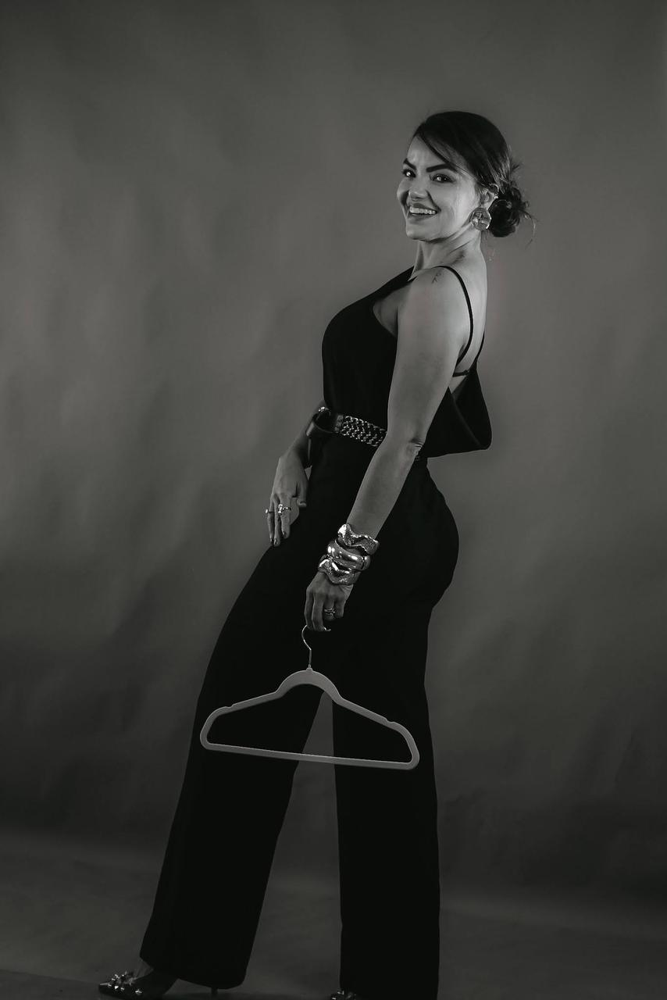

Para a mulher que sente que já passou da hora
de viver alinhada com o que sempre soube por dentro.
Existe um momento em que tentar parecer cansa.
Daí em diante, o que pede passagem é outra coisa.
A gente trabalha em três frentes que raramente caminham juntas — a forma como você se enxerga, o modo como você se comporta, e a imagem que carrega quando entra numa sala — até que comecem a conversar entre si.
Quero conversar com você
A maior parte das mulheres que eu atendo
carrega uma vida inteira no peito que ainda não soube como fazer aparecer por fora.
E quase nunca tem a ver com talento.
É só uma passagem que ainda está pra acontecer.
Uma roupa nova é fácil.
O que muda de verdade é o jeito de se olhar no espelho.
A gente conversa por algumas semanas.
O que fica dura bem além disso.
A gente começa por dentro. Sem isso, qualquer mudança lá fora vira fantasia.
Cada mulher tem um mundo onde sua presença faz mais sentido. A gente encontra o seu.
Aqui a gente alinha imagem e comportamento. E você para de precisar se explicar.
Mulher alinhada não corre atrás de oportunidade. Ela ocupa o espaço dela.
Uma hora por semana, ao vivo, via Zoom. Sem turma, sem espectadora. Cada encontro tem uma pergunta, um movimento e um silêncio pra você processar.
Pequenos exercícios pra você habitar. Um manifesto. Um painel visual. Um vídeo seu, gravado por você, pra você se ver com calma. Aqui a gente pratica devagar.
Modelagem, cores, materiais, acessórios. Você sai entendendo por que algumas peças te elevam — e por que outras te encolhem.
Eu te ajudo a falar de dinheiro, valor e limites sem perder a leveza. A gente treina até a voz parar de tremer.
Postura, gesto, olhar, ritmo. Eu te devolvo o que vejo com cuidado, pra você passar a escolher conscientemente o que mostra de si.
WhatsApp aberto entre os encontros. Pra uma reunião, uma dúvida, uma vontade de desistir. Você não atravessa isso sozinha.
Minha vida começou a mudar no dia em que parei de tentar parecer alguma coisa. Não foi um insight bonito — foi quase um cansaço.
Por anos atendi mulheres de alto padrão como esteticista e massoterapeuta. Eram salas silenciosas. Foi ali que entendi uma coisa que ninguém tinha me dito antes: o jeito como você se apresenta muda a forma como o mundo te trata. E, sem você perceber, vai mudando também a forma como você se trata por dentro.
Me formei em Consultoria de Imagem por uma escola francesa de referência e segui pra Paris fazer especializações em Estilo e Mercado de Luxo. Sigo voltando — estudar virou parte do meu ritmo.
Saí de São Paulo, morei em Dubai, hoje vivo entre cidades na Europa. Dessa travessia veio um jeito meu de trabalhar — sem fórmula pronta, com muito cuidado no detalhe. Uma mulher de cada vez.
A mulher que você procura já está aqui dentro.
Meu trabalho é só te ajudar a parar de competir com ela.
Eu sempre soube que era boa. Demorei mesmo a entender por que as pessoas não enxergavam isso na minha velocidade. Hoje sou olhada de um jeito diferente — e, talvez o mais importante, eu também me olho assim.
A Re tem uma forma de te ouvir que faz você se ouvir. Parei de baixar preço por medo, parei de me explicar demais, parei de pedir desculpa por existir. Foi quase silencioso. E foi tudo.
Vim atrás de imagem. Voltei pra casa com outra coisa — uma forma de viver que finalmente se parece comigo. E a vida que eu queria há tanto tempo está, enfim, acontecendo.
Você escolhe a profundidade.
Eu cuido do resto.
Não. Esse trabalho nasceu olhando pra arquitetas, mas as mulheres que mais se reconhecem aqui são as que sentem que carregam mais por dentro do que conseguem mostrar por fora — advogadas, médicas, empresárias, criativas. Se você é uma delas, é seu lugar.
Nada disso. A gente se encontra no Zoom. Eu mesma vivo entre cidades, então atender mulher em qualquer fuso virou parte do meu cotidiano. A leitura do seu contexto a gente ajusta junto.
O Essencial é uma passagem mais curta — quatro encontros para você se reconhecer, ajustar imagem e clarear o seu lugar. O Completo é uma travessia inteira: oito encontros, mais profundidade, treinos delicados de negociação, presença, networking e um plano honesto pros próximos 12 meses. Se quer ir até o fim, é o Completo.
Uma hora, uma vez por semana. O Essencial dura cerca de um mês. O Completo, dois. No meio, você tem exercícios pra habitar — e o meu WhatsApp pra quando precisar de um respiro ou de uma resposta.
Você tem sete dias pra dizer isso pra mim. Devolvo tudo, sem perguntas. Esse trabalho só faz sentido se for vontade de duas — e aqui eu prefiro mil vezes uma mulher honesta do que uma vaga preenchida.
Dá. Até 12x no cartão. Se preferir PIX à vista, conversamos uma condição mais cuidadosa.
Atendo poucas mulheres por mês. Esse é o ritmo que eu consigo manter com inteireza. Se essa página ainda está no ar, ainda tem um lugar aqui pra você.
Conversar comigo no WhatsApp